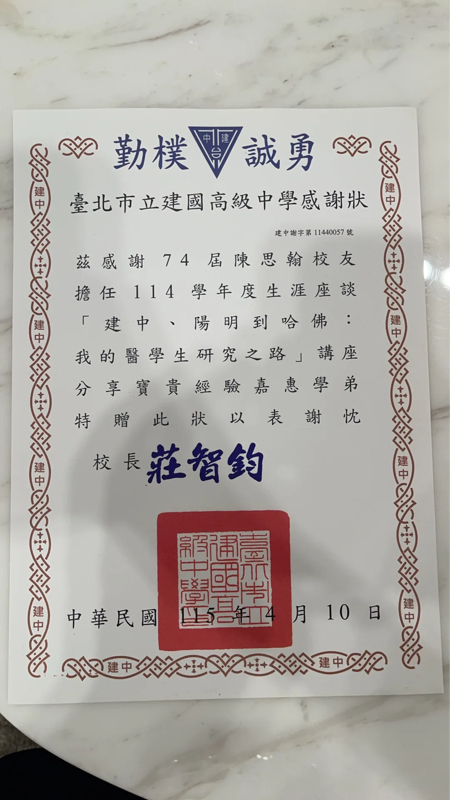
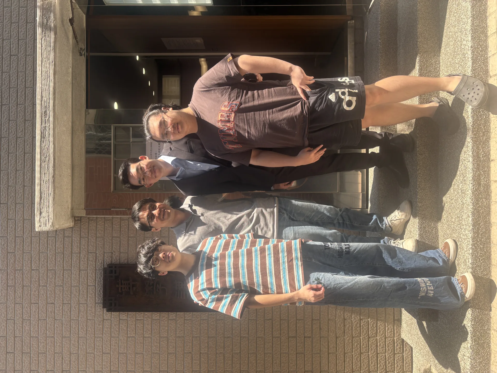
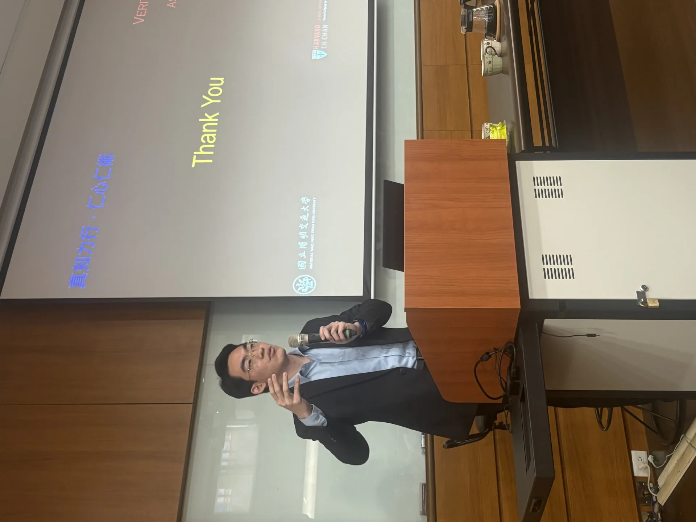
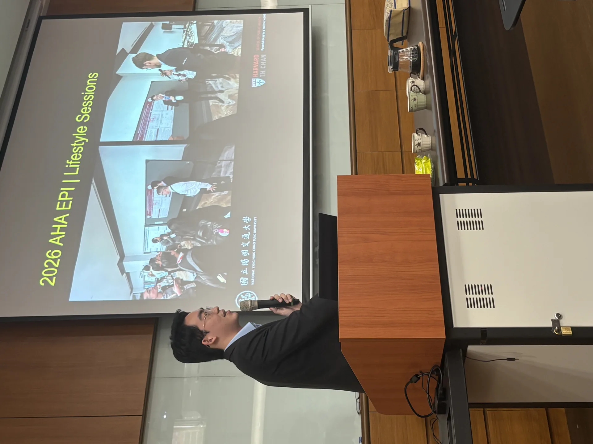
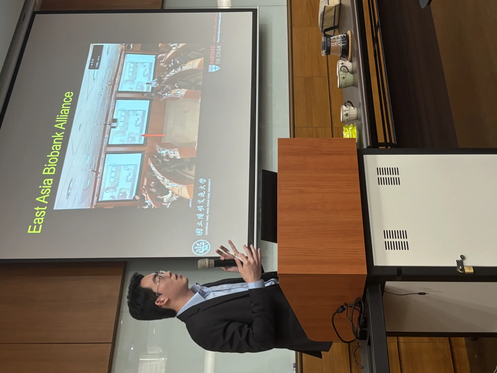
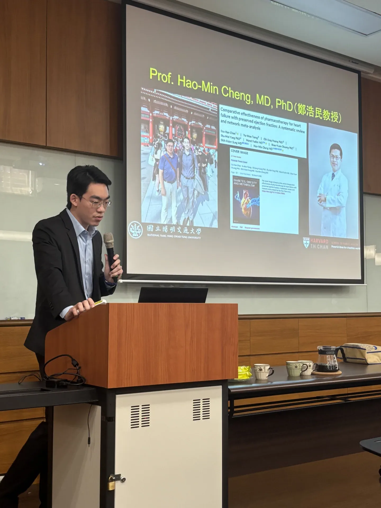
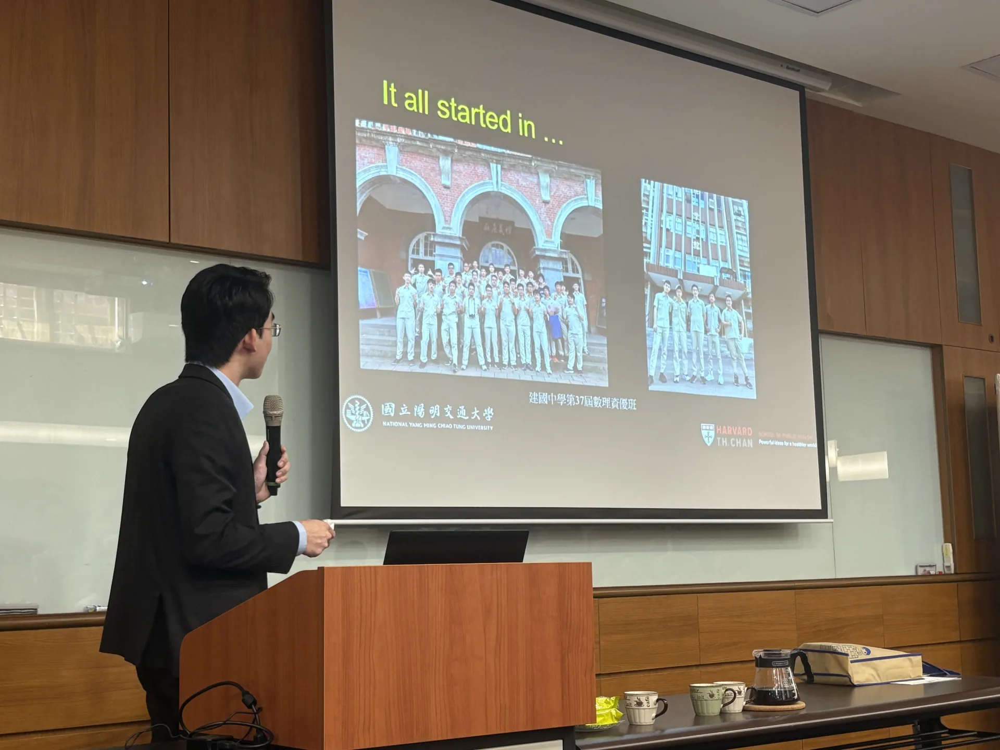
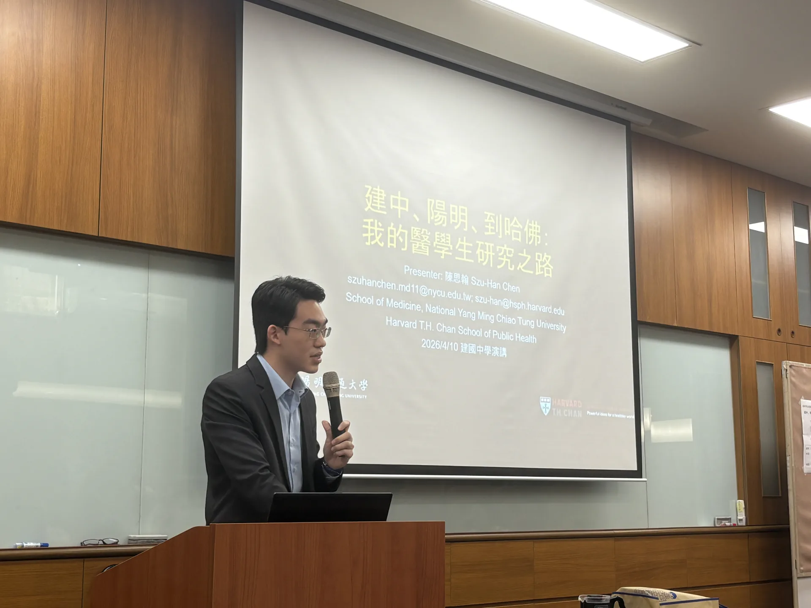
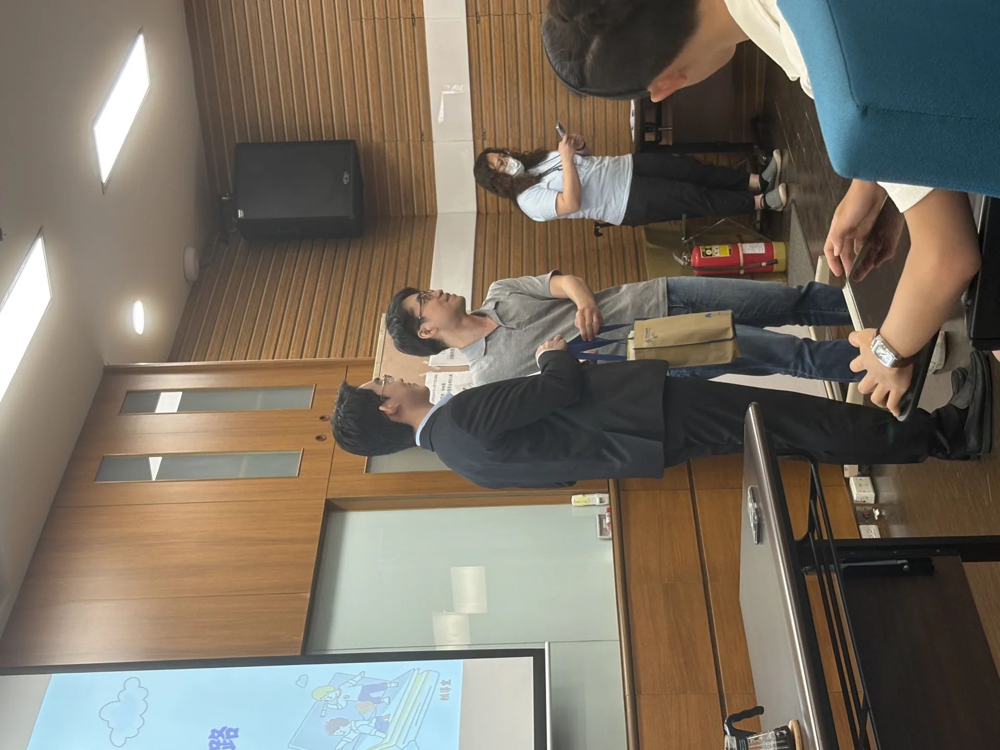

在醫學系四年級的這個階段
本人有幸受建國中學，我最愛的母校，的邀請回來和學弟們分享我從高中到大四這短短幾年內的研究經驗
除了感動受到母校建國中學的肯定之外
許多我的老師也特地來參加這場演講，包含我的導師林元祥老師和我的生物老師童禕珊老師，以及辦理此活動的輔導科姜懿芸老師，非常感動
林老師首先帶來了一段開場白，介紹了他眼中的我，從我高中時的點點滴滴到為什麼他希望促成此演講
而演講的過程我也滔滔不絕地講了45分鐘左右，更重要的則是回答學弟問題的部分
大家的互動比我想像地踴躍，看來大家都非常有興趣這次的內容，預先提出的問題加上現場提出的，大概也有三四十題
童老師也在互動環節，和學弟分享了他作為我高中科展指導老師，看到我從高中到現在的成長
我感動於兩位老師都以最細膩的觀察，真摯地說出來我作為一位學生，他們看到我的成長歷程
另外感謝廖致翔和莊承昌，我兩位高中最好的朋友，在這次演講也來友情支持
還有一直陪伴著我的女朋友，坐在台下陪伴著我訴說這幾年的經歷，儘管每一件事件他都是第一個知悉並支持著我的
事後我收到學弟們填寫的回饋，更為感動，以前念建中時這種會後表單都是隨便填寫的，但卻在這次演講後收到許多學弟的溫暖打氣以及正面回覆
希望很快還有機會回來，再和學弟們聊聊那天因時間緣故無法分享完全的內容，為母校貢獻微薄之力
高二高三要上學時，都會走經過紅樓上斗大的兩排話：「今日我以建中為榮，明日建中以我為榮」
我愛建中，永遠永遠








